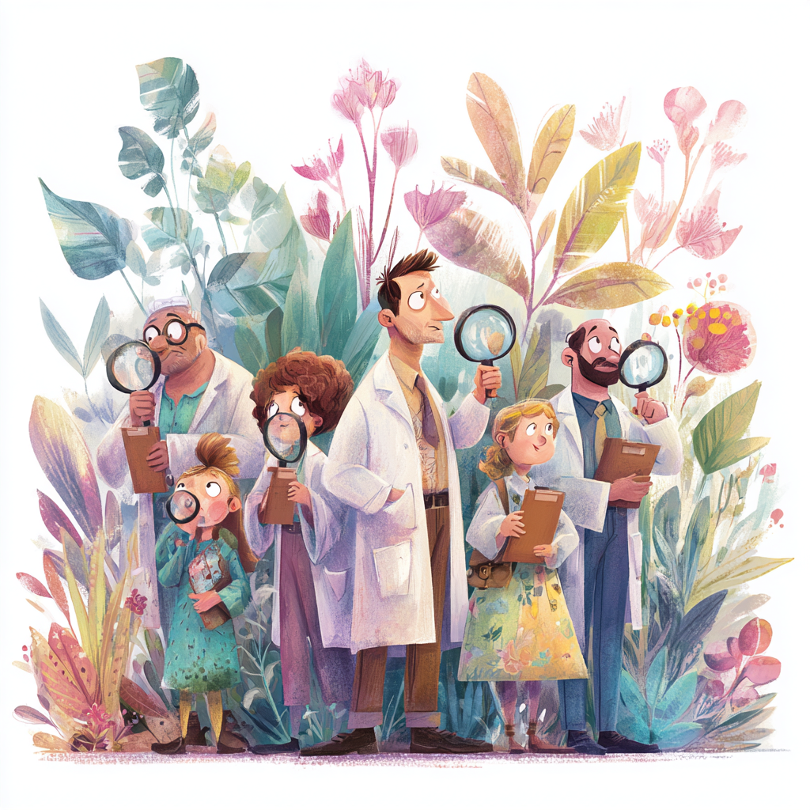
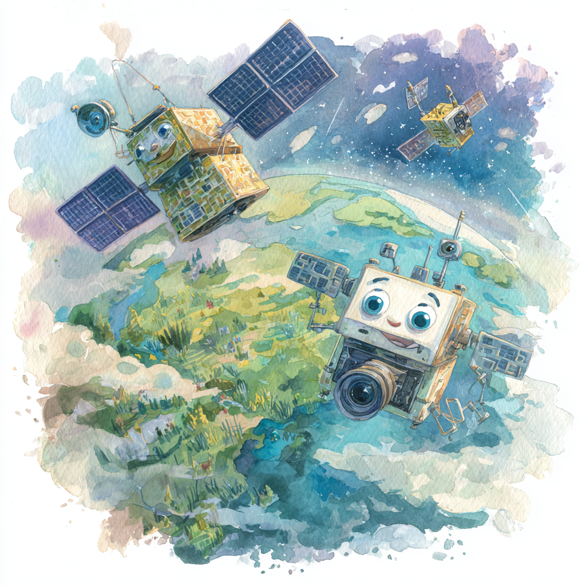
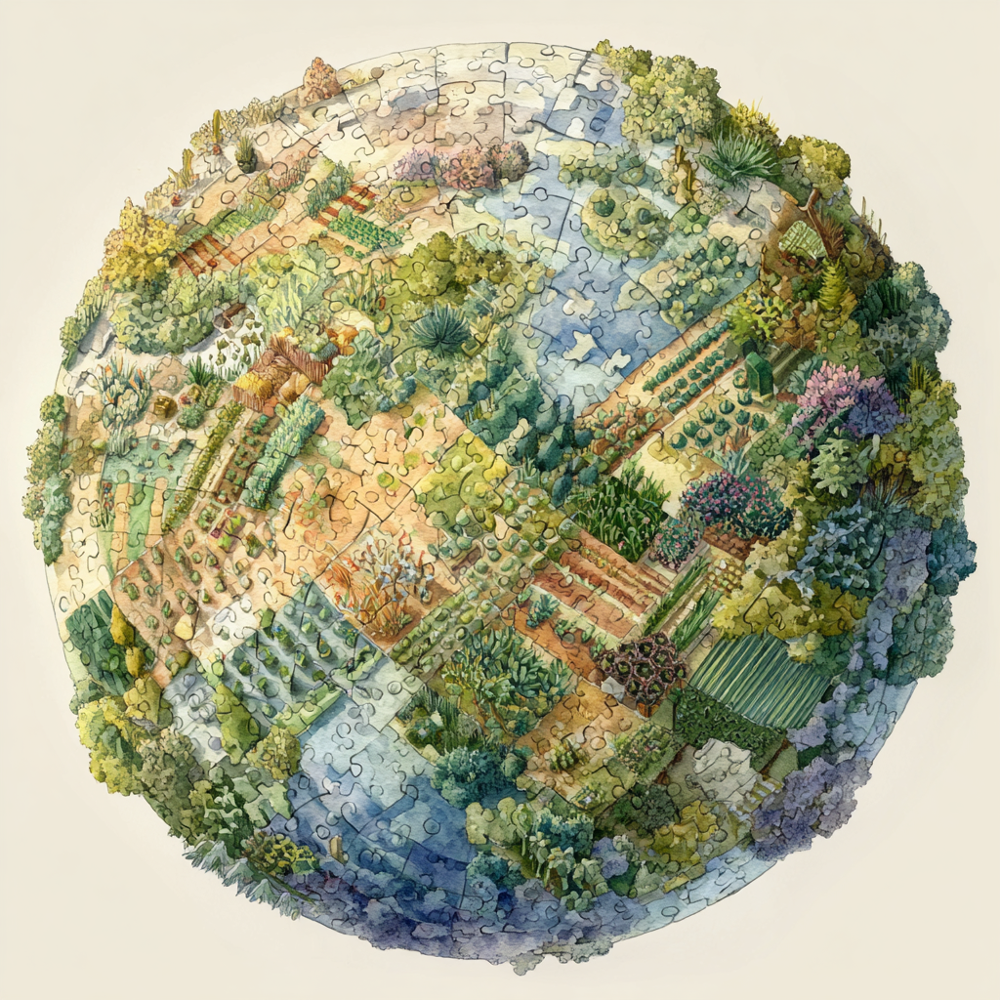
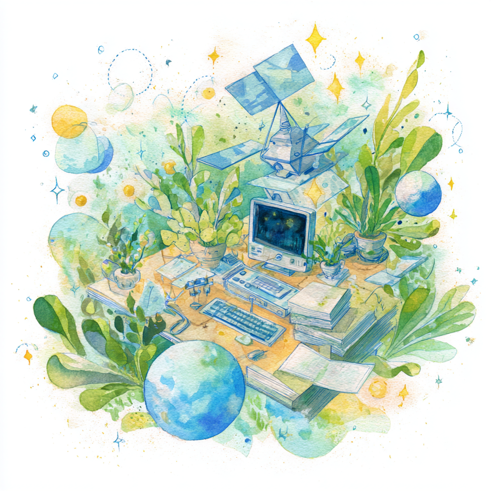

自然季节日历的惊人发现
第一章：认识植物侦探
从前，有一群超级聪明的科学家，他们注意到周围植物的一些令人困惑的现象。德鲁·寺崎·哈特博士和他的朋友们就像自然界的侦探，他们发现了有史以来最大的谜团：世界各地的植物似乎都在遵循不同的时间表，几乎就像它们每个都有自己的个人日历！
想象一下，如果你社区里的一些孩子在12月开始暑假，而其他孩子在6月开始，还有一些在3月度假。这会很令人困惑，对吧？嗯，这正是这些科学家注意到地球上植物正在发生的事情。
第二章：季节的秘密语言

地球上的每一种植物都有一种特殊的能力——它们可以与季节"对话"！但它们不是用语言，而是用更酷的方式。植物在一年中会改变颜色，这些颜色变化就像它们在说"我醒了！"或"我在打盹！"或"我在开花！"
科学家称这种特殊的植物语言为"物候学"。这就像大自然自己的短信系统，植物通过它发送关于它们在做什么以及何时做的信号。
这样想想：如果你能从直升机上俯视你的社区一整年，你会看到树木从棕色（睡眠）变成亮绿色（生长）再变成彩色（制造种子）然后又回到棕色。每株植物就像一个巨大的、活生生的画作中的像素，这幅画在一年中不断变化！
第三章：太空望远镜变成时光机
我们的植物侦探有一个惊人的工具——太空中的卫星，可以每隔几天拍摄整个地球的照片！整整20年（这是你生命的两倍长！），这些太空相机观察着我们星球上的每一个地方，为每个地方拍摄了超过1800张照片。
但这些不是普通的相机。它们可以看到一种叫做"近红外"的特殊光线，当植物积极地从阳光中制造食物时会反射这种光线。这就像拥有X射线视觉，可以从数百英里高的太空中看到植物有多忙碌和健康！
科学家们收集了如此多的信息，如果你把它们全部打印出来，纸张堆叠起来会比帝国大厦还高！
第四章：伟大的植物日历之谜
当科学家们查看所有太空照片时，他们发现了一些绝对令人震惊的事情。地球不是所有植物都遵循相同的季节时间表，而是像一个由不同植物日历组成的巨大拼布被！
颠倒的邻居
在一些地方，彼此相邻生活的植物遵循完全相反的时间表！在加利福尼亚，一些植物在凉爽多雨的冬天醒来并开始生长，而仅几英里外的沙漠邻居等到夏天才真正活跃起来。这就像有最好的朋友在完全不同的时间吃早餐，即使他们住在同一条街上！
远距离双胞胎
更令人惊奇的是，科学家发现生活在完全不同大陆上的植物有时遵循几乎完全相同的时间表！加利福尼亚的植物可能与智利的植物（在世界的另一边）同时醒来，因为它们都经历相似的天气模式。这就像发现日本的孩子和巴西的孩子每天都在完全相同的时间刷牙，即使他们从未见过面！
热带时区混乱
在赤道附近总是温暖的热带地区，发生了一些超级疯狂的事情。与寒冷地区的植物有一个主要生长季节不同，热带植物即使生活得非常接近，也可能有完全不同的时间表。
想象一下：你和你最好的朋友就住在街对面，但你在中午吃午餐，而他们在下午6点吃午餐。这会很奇怪，对吧？嗯，这正是热带山区和森林中植物发生的事情！
第五章：咖啡豆冒险

科学家们对哥伦比亚咖啡植物做出了一个令人难以置信的发现，这显示了这些植物日历有多么疯狂。哥伦比亚以拥有两个完全不同的咖啡收获季节而闻名——一些农民在12月采摘咖啡豆，而其他人在6月采摘。这就像在同一个国家的冬天和夏天都过圣诞节！
科学家发现，这种情况发生是因为山脉一侧的植物遵循与另一侧植物完全不同的季节时间表，即使它们可能只相距60公里（大约45分钟的车程）。山脉阻挡了不同的天气模式，在每一侧创造了完全不同的植物日历！
这一发现有助于解释为什么哥伦比亚咖啡如此特别——这个国家可以一年收获两次新鲜咖啡豆，而不是像世界上大多数其他地方那样只收获一次。
第六章：动物连接游戏

但是等等——故事变得更加有趣！当植物改变它们的时间表时，会产生一个巨大的连锁反应，触及地球上的每一个生物。
这样想想：如果你学校的食堂突然开始在下午3点而不是中午供应午餐，你会很饿很困惑！当动物的植物食物来源改变时间表时，同样的事情也会发生在动物身上。
科学家发现，在一些热带山区，这种时间混乱实际上可能有助于创造更多不同类型的动物和植物。当植物时间表混乱时，它可以分离动物种群，并帮助它们在很长的时间内进化成新物种。这就像大自然创造生物多样性的方式！
第七章：气候变化侦探工作

这项研究对理解气候变化也非常重要。通过了解植物通常如何安排它们的活动时间，科学家可以更好地检测全球变暖何时扰乱这些自然时间表。
这就像有一个基线来知道何时发生了不寻常的事情。如果通常在3月醒来的植物突然开始在1月醒来，科学家就知道这是气候变化影响该地区的迹象。
科学家发现，地球上的一些地方对这些时间变化比其他地方更敏感。热带山区和地中海气候地区（如加利福尼亚和澳大利亚的部分地区）似乎最容易受到植物日历被破坏的影响。
第八章：使魔法成为可能的技术
科学家使用了一些相当令人难以置信的技术来做出这些发现。他们的卫星可以测量一种叫做"植被近红外反射率"的东西——基本上是植物在进行光合作用（从阳光中制造食物）时反射多少特殊光线。
他们还使用超强大的计算机来分析所有这些数据。想象一下试图解决一个有超过100万块拼图的拼图，其中每一块都代表地球上不同时间的不同地方——这就是这些科学家所做的！
他们甚至创建了特殊的数学模型，可以预测植物在不同季节会做什么，有点像拥有植物行为的水晶球。
年轻科学家的趣味事实
- 科学家使用卫星为地球上的每个地方拍摄了20年超过1800张照片！
- 植物可以通过改变颜色与季节"对话"——这就像大自然的短信系统
- 哥伦比亚咖啡农民可以一年收获两次，因为山脉不同侧的植物遵循不同的时间表
- 如果你打印所有卫星数据，堆叠起来会比帝国大厦还高！
- 热带山区的植物时间表混乱实际上有助于创造更多的生物多样性
你能做什么
- 开始自然日记：记录你所在地区不同植物何时开始长新叶、何时开花、何时落叶
- 每月拍照：每月为同一棵树或植物拍照，看看它在一年中如何变化
- 与朋友比较：如果你在其他地方有朋友或家人，比较一下他们那里的植物何时做不同的事情
- 注意模式：你可能开始看到这些科学家发现的惊人季节模式就在你自己的后院发生！
- 参与公民科学：在iNaturalist等应用程序上分享你的植物观察
大局观
这个惊人的发现向我们展示了大自然比我们想象的更加复杂和美丽。地球不是一个简单的、统一的系统，而是一个由数千个不同的、相互关联的生态系统组成的复杂拼图，每个都有自己独特的时间表和节奏。
理解这些模式帮助我们更好地保护我们的星球，改善农业，并为气候变化的影响做准备。最重要的是，它提醒我们，即使是最小的植物也是地球巨大、相互连接的生命网络的重要组成部分。
科学简报：自然季节日历的全球发现
关键发现
通过20年的卫星观测，科学家发现地球植物的物候模式比以前认为的要复杂得多，不同地区的植物遵循截然不同的季节时间表，即使在相邻的生态系统中也是如此。
核心发现
研究揭示了植物物候的全球模式，显示热带山区和地中海气候区域具有最复杂和多样化的季节时间表。这些发现对理解生物多样性模式、农业规划和气候变化影响具有重要意义。
意义
这项研究为预测气候变化如何影响不同生态系统提供了基础，并为保护生物多样性和可持续农业实践提供了重要见解。
教育价值
这个故事展示了现代科学技术如何帮助我们理解复杂的自然系统，以及公民科学在验证科学发现中的重要作用。